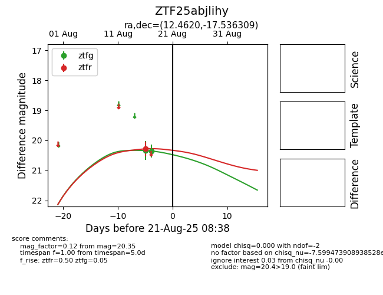

Target ZTF25abjlihy at 2025-08-21 08:38, see:
FINK: fink-portal.org/ZTF25abjlihy
Lasair: lasair-ztf.lsst.ac.uk/objects/ZTF25abjlihy
ALeRCE: alerce.online/object/ZTF25abjlihy
alt names
ZTF25abjlihy (ztf,alerce)
coordinates:
equatorial (ra, dec) = (12.4620,-17.53631)
galactic (l, b) = (120.6587,-80.40104)
photometry
last ztfg=20.35, ztfr=20.28
2 ztfg, 1 ztfr detections
